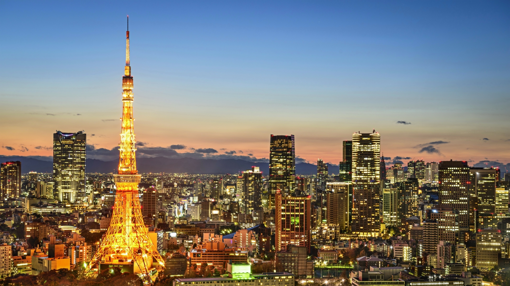
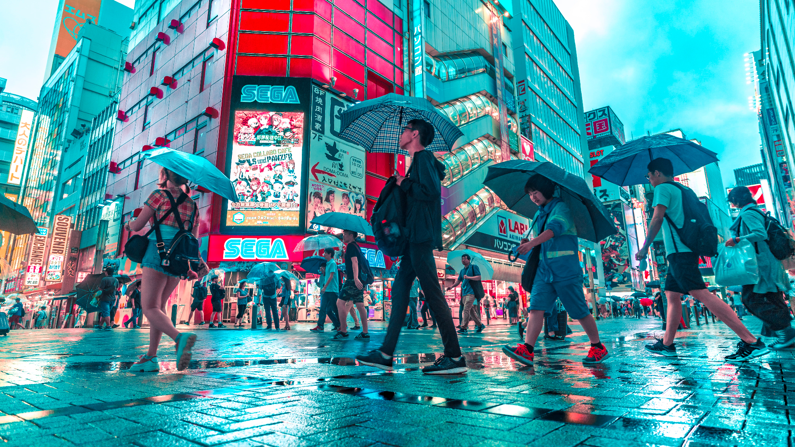
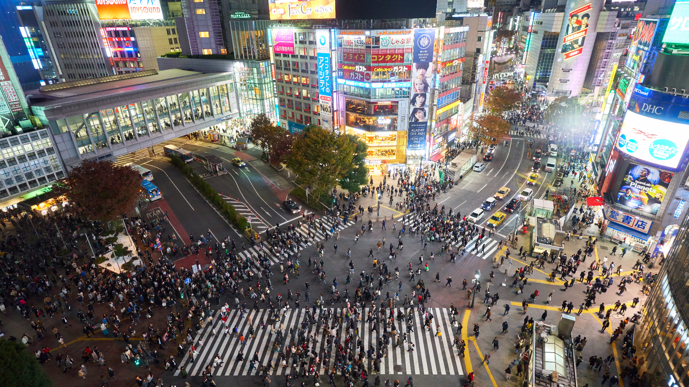
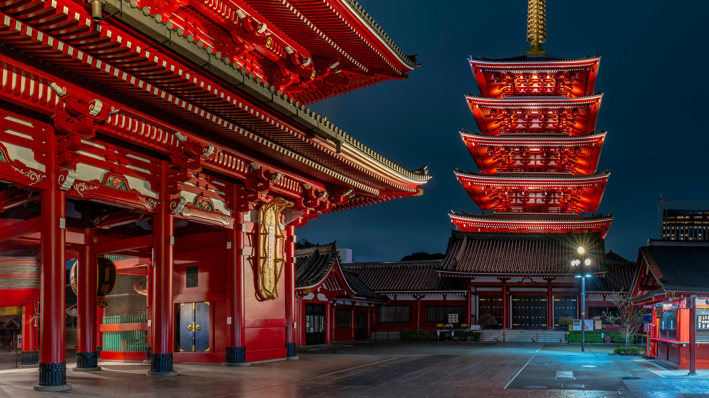

Tokio
Tokio Tower
La Torre de Tokio es una icónica estructura de acero situada en el barrio de Minato en Tokio. Con una altura de 333 metros, la torre es una de las estructuras más altas del mundo y es un importante símbolo de la ciudad.
Además de ser una atracción turística popular, la Torre de Tokio cuenta con numerosas instalaciones, como tiendas, restaurantes y observatorios que ofrecen vistas impresionantes de la ciudad. Los visitantes pueden disfrutar de las vistas panorámicas desde la plataforma de observación a 150 metros de altura, o desde la plataforma principal a 250 metros de altura, que cuenta con suelo de vidrio para una experiencia aún más impresionante.
La torre también es un lugar popular para eventos y celebraciones especiales, como bodas y propuestas de matrimonio. Durante la temporada de Navidad, la torre se ilumina con luces espectaculares, convirtiéndose en un destino popular para los visitantes.
En resumen, la Torre de Tokio es una atracción turística emblemática que ofrece impresionantes vistas de la ciudad y una experiencia única en Tokio.
Akihabara
Akihabara es un vibrante barrio de Tokio, famoso por su cultura otaku y electrónica. Conocido como "Akiba" por los lugareños, el barrio es un paraíso para los fanáticos del anime, manga, videojuegos y la tecnología. Las tiendas y centros comerciales de Akihabara están llenos de productos electrónicos, desde pequeños dispositivos hasta grandes televisores de pantalla plana, y los aficionados pueden encontrar todo tipo de accesorios y gadgets para sus computadoras, teléfonos y otros dispositivos.
Pero Akihabara no es solo para los entusiastas de la tecnología, también tiene una gran cantidad de tiendas de cómics y anime, cafeterías temáticas, maid cafés y salones de videojuegos, todos con una fuerte presencia de la cultura pop japonesa. Además, Akihabara es el hogar del famoso cruce peatonal de Shibuya, que se ilumina en la noche con neones y carteles publicitarios.
Akihabara es un lugar emocionante y único que es imprescindible para cualquier viajero que visite Tokio.
Shibuya
Shibuya es uno de los barrios más populares y animados de Tokio, conocido por ser un importante centro de compras, entretenimiento y moda. El barrio es famoso por su icónico cruce peatonal, que se encuentra en la intersección de varias calles principales y es uno de los lugares más concurridos de la ciudad.
Además de sus tiendas y centros comerciales, Shibuya es también un centro de la moda, con algunas de las tiendas más exclusivas de la ciudad y numerosas boutiques de moda independientes. Los amantes de la música pueden encontrar tiendas de discos y una variedad de lugares de música en vivo, mientras que los aficionados a la comida pueden disfrutar de una amplia selección de restaurantes, bares y cafeterías.
Shibuya también es conocido por ser un lugar popular para los jóvenes y la vida nocturna, con muchos bares, clubes y discotecas que atraen a multitudes de fiesteros todas las noches.
En resumen, Shibuya es un barrio emocionante y diverso que ofrece algo para todos los gustos, y es un lugar imprescindible para visitar en Tokio.
Senso-Ji
El templo Senso-ji es uno de los templos budistas más antiguos y venerados de Tokio. Situado en el barrio de Asakusa, este templo es una de las atracciones turísticas más populares de la ciudad.
Construido en el siglo VII, el Senso-ji cuenta con una impresionante puerta de entrada conocida como "Kaminarimon", la cual se destaca por su gran farol rojo y una enorme figura de un dios guardián. A medida que los visitantes avanzan por el camino hacia el templo, encuentran numerosas tiendas de souvenirs y comida tradicional.
El templo en sí es impresionante, con una arquitectura impresionante y un ambiente espiritual. Los visitantes pueden recorrer los jardines del templo y explorar los santuarios interiores. Además, el templo es un lugar popular para festivales y eventos, incluyendo el "Sanja Matsuri", uno de los festivales más grandes de Tokio.
En resumen, el templo Senso-ji es un lugar fascinante e impresionante que ofrece una mirada a la rica historia y cultura de Japón, y es un destino turístico imprescindible para cualquier persona que visite Tokio.